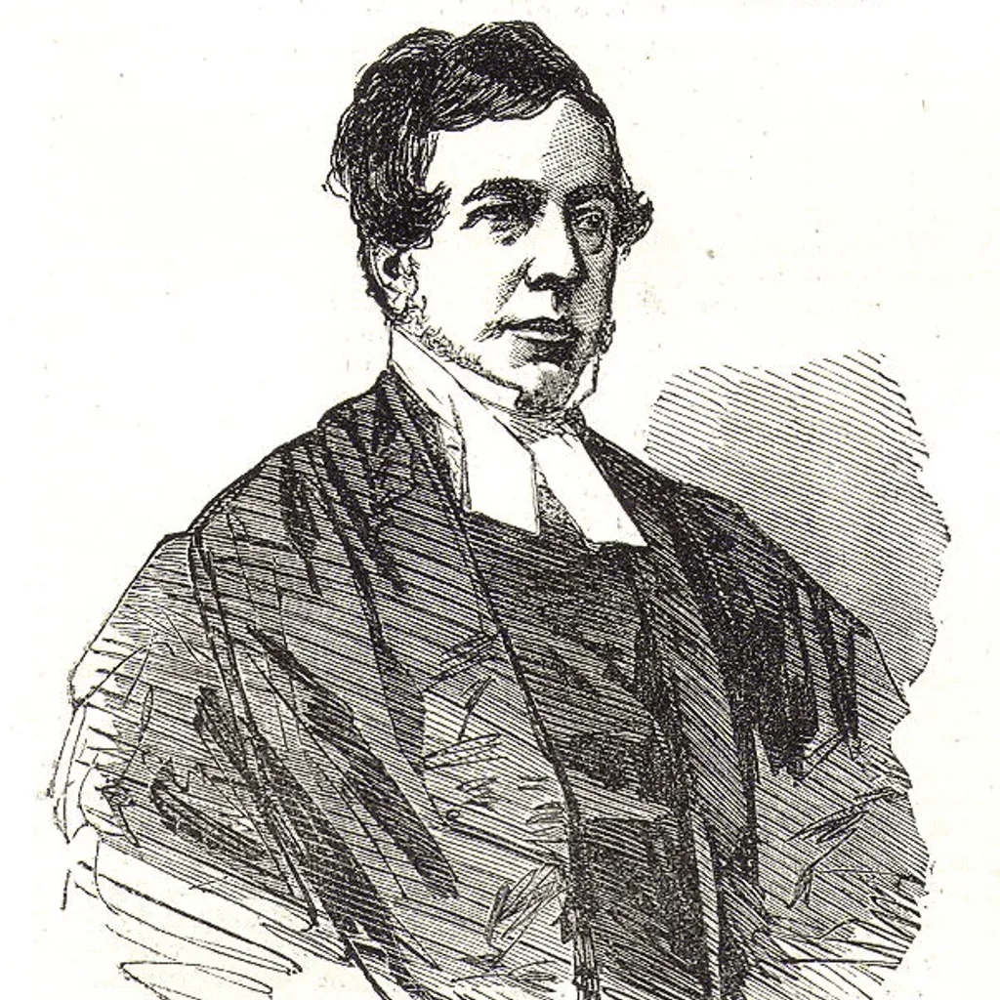

Cuenta la leyenda que en 1823, durante un partido de fútbol en un colegio de la ciudad de Rugby, Inglaterra, un joven llamado William Webb Ellis levantó la pelota y corrió hacia la línea de meta oponente.
Dos siglos después, el Rugby ha evolucionado hasta convertirse en uno de los deportes más populares del mundo, con millones de personas jugando, mirando y disfrutando del Juego.
En el corazón del Rugby está el espíritu único que se ha mantenido a lo largo de los años. El Rugby no sólo se juega ajustándose a las Leyes sino también dentro del espíritu de las Leyes.
Mediante la disciplina, el control y el respeto mutuo se forja una fraternidad y sentido de juego limpio que define al Rugby como el Juego que es.
Desde el terreno de juego de aquel colegio hasta la final de la Copa del Mundo, el Rugby ofrece una experiencia verdaderamente única y totalmente reconfortante para todos los participantes en el Juego.
